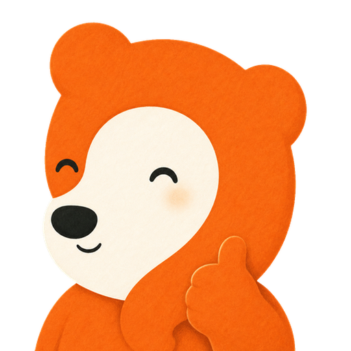
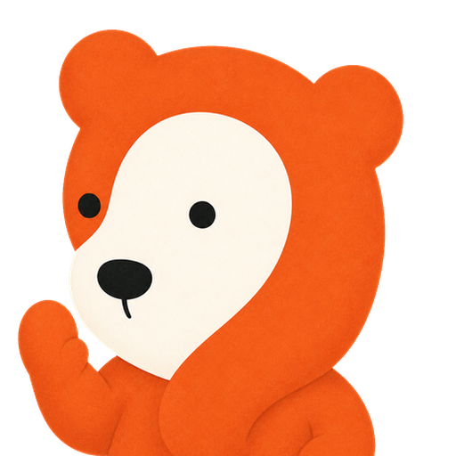
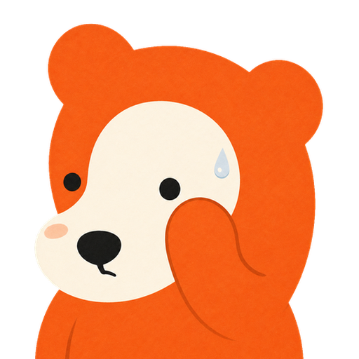
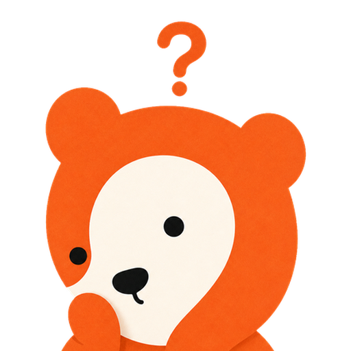

Windows 版控制台窗口(柔白品牌风)。所有开关、滑块、主题切换都是活的,可以直接点着玩——「岛体预览」会实时响应不透明度和暗/亮主题。批准后按此稿移植 WPF。




语义约定:右上总开关 = 暂停弹窗(daemon 保活,面板照常记录),不是退出;退出在左下角。 「岛体不透明度」只作用玻璃底,文字与小熊头像始终不透明。统计为示意假数据,真实版读 events.jsonl 并做每日归档(环形缓冲只留 40 条,趋势需另存日计数)。
亮色主题要点:玻璃底换柔白 rgb(252 250 247),字色转墨黑系,状态色环 / 徽章 / 光晕不变——状态语义在两套主题下完全一致。 默认仍是暗色;亮色给浅色壁纸用户。WPF 落地注意:窗口宽 720,双列卡片;控件全部现有栈可实现(开关 = Border+译码动画,分段 = ToggleButton 组,趋势 = Polyline),不引新依赖。